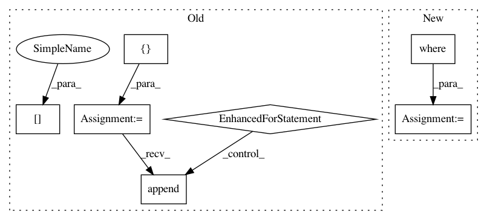

5bc2c075733e672a9a7c5e14bc474788f88e90de,gluoncv/utils/viz/mask.py,,expand_mask,#Any#Any#Any#Any#Any#Any#Any#,9
Before Change
else:
sorted_inds = np.argsort(range(len(masks)))
full_masks = []
bboxes *= scale
for i in sorted_inds:
if scores is not None and scores[i] < thresh:
continue
mask = masks[i]
bbox = bboxes[i]
full_masks.append(fill(mask, bbox, im_shape))
full_masks = np.array(full_masks)
return full_masks, sorted_inds
After Change
sorted_inds = np.argsort(range(len(masks)))
bboxes *= scale
valid = np.where(scores >= thresh)[0]
sorted_inds = sorted_inds[valid]
masks = masks[valid]
bboxes = bboxes[valid]
full_masks = fill(masks, bboxes, im_shape)
return full_masks, sorted_inds
def plot_mask(img, masks, alpha=0.5):
In pattern: SUPERPATTERN
Frequency: 3
Non-data size: 7
Instances
Project Name: dmlc/gluon-cv
Commit Name: 5bc2c075733e672a9a7c5e14bc474788f88e90de
Time: 2019-12-06
Author: jerryzh.cn@gmail.com
File Name: gluoncv/utils/viz/mask.py
Class Name:
Method Name: expand_mask
Project Name: danforthcenter/plantcv
Commit Name: 533ff301b693aaae8d0e525bafc4d83101fe0d13
Time: 2019-04-11
Author: noahfahlgren@gmail.com
File Name: plantcv/plantcv/analyze_color.py
Class Name:
Method Name: analyze_color
Project Name: jonathf/chaospy
Commit Name: fde4b1f40f02082b56e8af3c696b3f1b0cef7fa4
Time: 2017-09-30
Author: jonathf@gmail.com
File Name: src/chaospy/saltelli.py
Class Name:
Method Name: Sens_m_sample